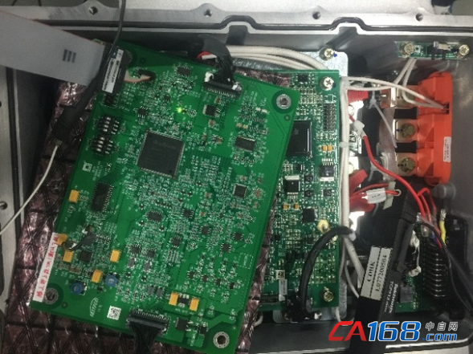
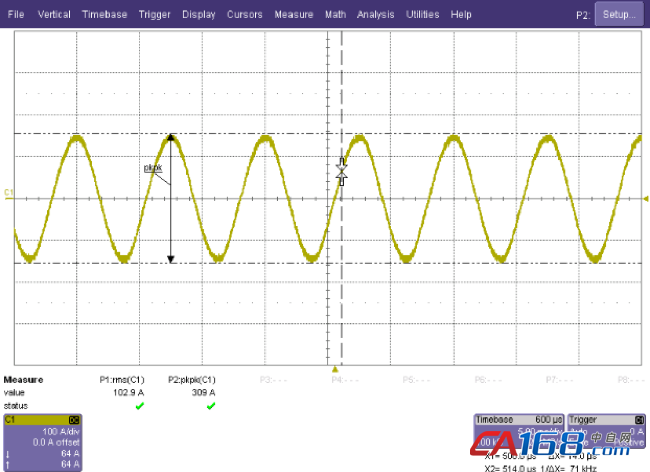
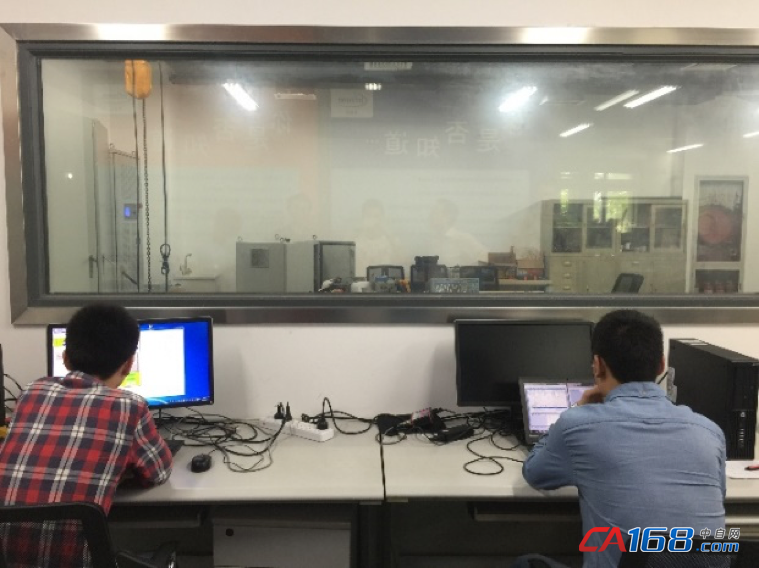

昌和自动化设备有限公司
18125023620
235468338@qq.com
发布日期：2016-07-12；同济大学中德学院、上海大郡动力控制技术有限公司、英飞凌科技、维克多四方倾力合作
2016年7月11日，上海讯——今日，同济大学中德学院、上海大郡动力控制技术有限公司、英飞凌科技及维克多联合宣布，同济大学中德学院成功研发出了基于英飞凌Aurix系列TC275单片机和维克多 AUTOSAR 4.0.3规范（多核OS）的电机控制器原型机，这是国内首例AURIX系列单片机基于Autosar架构的电机系统开发。
Autosar是国际成熟车厂普遍使用的汽车开放系统架构，汽车零部件厂商需要开发符合Autosar要求的系统，以便进入主流车厂的供应链体系，而该系统则需要从芯片层面、软件层面乃至工具链层面等一系列的配套支持。
英飞凌作为全球领先的汽车半导体供应商，在Autosar方面积累了丰富的经验。在该电机控制器原型机中，英飞凌提供的Aurix系列单片机的MCAL Drivers: MC-ISAR(MicroController Infineon Software ARchitecture)底层代码，为同济大学中德学院的开发提供了有力支持。此外，Aurix产品家族性能优势显著，数据处理能力可达1300DMips，并具备8兆flash和640kB SRAM，可满足苛刻条件下的高速稳定数据处理要求。针对目前功能安全ISO26262标准，Aurix可帮助客户在系统应用中达到ASIL-D最高等级。同时，Aurix具有丰富的外设，可满足不断增长的车内网络架构需求，从512kB到8MB的flash范围，从TQFP80到LFBGA516各种封装，全面的产品家族可配合客户的不同应用和开发兼容性。
该项目的四方合作主要是为国内知名电动汽车零部件厂家上海大郡动力控制技术有限公司探索开发符合AUTOSAR 4.0.3规范的电机控制器基础软件和部分应用层软件。同济大学中德学院设计了基于英飞凌Aurix系列TC275单片机和TLF35584芯片的电机控制板的硬件电路，基于维克多多核OS的概念规划了多个任务、CAT1和CAT2中断，并合理地分配到TC275的多个内核中，在保证多核之间数据可靠交互的情况下，充分发挥TC275多核CPU的优点，使电机控制更安全更稳定。 
图1：电机控制器硬件系统
其次，同济大学中德学院利用维克多 DaVinci Developer工具设计出RTE软件架构，包含所有的应用层SWC框架及其所包含的Runnables和接口变量等。利用MATLAB/Simulink工具开发功能完整的SWC模型，包含各种故障诊断模块和电机控制算法模块。在MIL/SIL/PIL测试验证之后，利用代码自动生成技术将Simulink模型转换为SWC源代码。同时，设计中利用英飞凌MCAL配置工具和维克多 DaVinci Configurator对MCAL、ECU抽象层、服务层等进行合理配置，开发出符合AUTOSAR规范的基础软件（BSW）。根据不同应用需求，可以灵活地增减BSW模块。通过对BSW的标准化能够把硬件从软件中抽象出来，提升了应用层软件可重复利用率，大大提高了应用软件工程师的开发效率。最后，对基础软件和应用层软件进行集成，实现了稳定可靠的电机转矩控制，电机相电流波形如下： 
图2：电机相电流波形

图3： 同济与大郡共同测试和验证电机控制器软件
此外，上海大郡动力控制技术有限公司及同济大学还荣获了国家重点研发计划（2016~2020年度）“电机驱动控制器功率密度倍增技术（重大共性关键技术类）”资助，将与英飞凌、维克多进一步展开深度合作，在当前英飞凌Aurix TC275硬件平台和维克多 AUTOSAR 4.0.3软件平台的基础上，引入ISO26262规范的设计流程，针对汽车厂商提出的功能安全目标，在系统、硬件和软件的设计中加入功能安全机制，开发符合ASIL-C等级的电机控制器，并计划在2019年实现电机控制器的批量生产。
关于同济大学中德学院
同济大学中德学院分别于2003年10月和2015年1月创建了同济大学-英飞凌汽车电子联合实验室和同济大学中德学院-维克多汽车技术联合实验,这两家联合实验室由同济大学中德学院吴志红教授、朱元副教授团队领导，共同致力于新能源汽车电机控制和汽车嵌入式软件两大方向的研发。
常用通讯
针对新能源汽车电机控制系统的技术要求，从事车用永磁同步电机控制算法的研究，例如电机参数辨识、随机PWM调制、无位置传感器控制、死区补偿、在线转矩估计、转矩安全策略、精确转矩控制、高速弱磁控制、电流谐波抑制算法、电机转子温度估计算法等。
采用先进的开发工具，例如维克多（维克多）总线、标定、诊断和 AUTOSAR工具，按照规范的汽车电子开发流程，基于上述的电机控制算法，为客户提供符合汽车电子规范的电机控制器软件系统。
wwww.chzdh.net
18125023620
235468338@qq.com